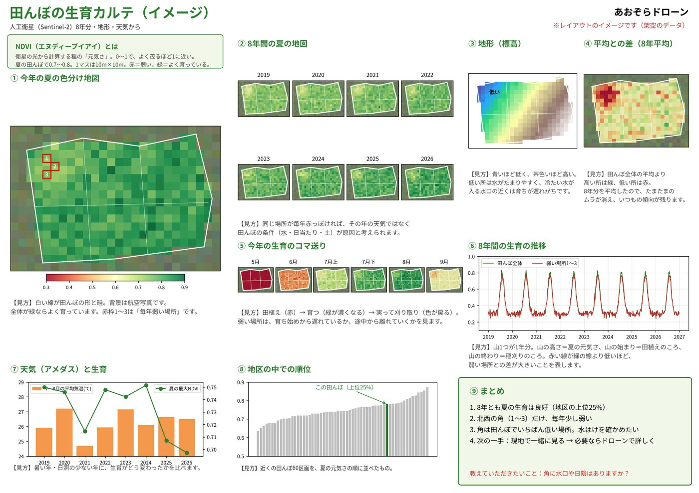

衛星データの生育診断と、農業用ドローンの散布。
兵庫県宝塚市から、北摂・丹波・東播の水田へお伺いします。
田んぼのことをいちばんよくご存じなのは、毎年その田んぼと向き合ってこられた農家の皆さまです。
あおぞらドローンは、ドローンや衛星データという新しい道具を活用し、皆さまのお話に耳を傾け、学びながら、一緒によりよい米づくりに取り組んでいきたいと考えています。
日々の作業の負担を少しでも軽くし、田んぼの様子や作業の記録を丁寧に残すことで、地域の米づくりのお役に立てれば幸いです。
ドローンは、まとまった田んぼを続けて散布することで効率が上がります。そのため、地区ごとに時期を分けてお伺いします。ご理解ください。
ドローンの散布には、国（国土交通省）の飛行の許可・承認、県への届出や散布計画の提出が必要です。また、機体の点検・修理が入ることもあります。そのため、日程を調整させていただく場合があります。
事業開始前の今は、ご相談と生育診断のご説明を無料で行っています。
いまご提供できることと、2027年シーズンから始めることを分けてご案内します。
人工衛星のデータで、田んぼの生育を10m四方ごとに色分け。過去の年と比べて「毎年育ちが弱い場所」を見つけます。
大型の農業用ドローンで、農薬・肥料などの散布を請け負います。広い区画の水田を中心に、安全を最優先に作業します。
散布の日時・場所・薬剤・量と、生育の図をお渡しします。営農記録やGAPの記録にお使いいただけます。
田んぼの「どこで育ちが遅れているか」を見える化し、場所ごとに散布の量を変える（可変散布）ことを目指しています。

衛星のデータだけで原因を決めつけることはしません。現地の様子や栽培の記録、何より農家さんのお話とあわせて考えます。
衛星・ドローン・現地のセンサー・記録を組み合わせて、「見る → 確かめる → まく → 記録する」をつなげます。
欧州の地球観測衛星 Sentinel-2 のデータから、NDVI（生育の良さ）を10m四方ごとに計算。最大8年分を比べます。
DJI Mavic 3 Multispectral。近赤外線も撮れるカメラで、衛星より細かく（数cm単位）生育を確認します。
DJI AGRAS T70P（最大70L）と専用バッテリー・発電機。補給の回数が少なく、広い田んぼを短時間で散布します。
小型コンピューター（Raspberry Pi）にGPSと土壌水分センサーをつなぎ、スマホの地図上で、NDVIのマスに重ねて測った値を記録します。
散布の記録や生育の図を、アグリノートなどの営農管理アプリやGAPの記録に生かせる形でお渡しできるよう準備しています。
見る（衛星） → 確かめる（ドローン・センサー） → まく（散布ドローン） → 記録する（営農記録）
「導入準備中」の機材は、2027年シーズンからの使用に向けて準備を進めています。導入の時期が決まりしだい、このページでお知らせします。
まずはお気軽にご相談ください。
「目安の見積もり」のページから。地図で田んぼを選ぶか、地区名と広さを入れて送ってください。そのあとはLINEでやりとりします。
田んぼと周辺（住宅・電線・水路など）を一緒に確認します。
作業の内容と料金を決め、日程をご相談します（土日祝日が中心）。
天候・風を確認し、安全を最優先に作業します。
作業の記録・写真・生育の図をお渡しします。
田んぼの広さ・形・周辺の状況で変わります。必ずお見積りをお出しします。
| 農業用ドローンの散布 | 10aあたり 2,500円〜4,000円（1haあたり25,000円〜40,000円） 2027年シーズンから。薬剤代は含みません。 |
|---|---|
| 衛星データの生育診断 | 事業開始前の今は、無料でご説明しています 2027年シーズンからの料金は、区画の数や見たい年数によって決めます。 |
| 出張費 | ご相談ください |
データと記録を大切に、ていねいな作業をこころがけています。
安全のため、広い区画の水田を中心にお受けしています。小さな田んぼが続く場所は、まとめてお受けできるかご相談ください。
事前に現地を確認し、住宅・学校・畜舎などの周辺の状況に合わせて、飛ばし方や散布の可否を判断します。
はい。散布した日時・場所・薬剤・量を記録してお渡しします。営農記録やGAPの記録にお使いいただけます。
はい。散布のご依頼がなくても、生育診断だけのご相談をお受けしています。
ご相談は「目安の見積もり」のページからお願いします。作業日は土日祝日が中心です。ご希望の日に必ずお伺いできるとは限りませんので、日程はご相談ください。
1. 地図で田んぼを選ぶか、地区名と広さ（例：3反、50a、0.5ha）を入れます。
2. 作業時間と料金の目安が出ます。
3. 「この内容で相談する」で送ると、受付番号つきでLINEからご相談いただけます。
お名前・ご住所・お電話番号は不要です。くわしいお話はLINE（通話もできます）でうかがいます。